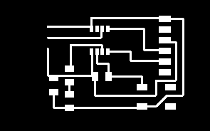

Electronics Design
This is where we learn how to design our own PCB board from scratch.
.png)
This is where we learn how to design our own PCB board from scratch.
Before starting we are tasked in install Autodesk Eagle.
After doing so we will need to add in some libraries to access the required components needed for the design.
1. PCB G-code
.png)
2.Library
.png)
4. Control panel
.png)
.png)
.png)
For the Echo hello world board we are using the ATTINY412 microcontroller. We will be following this circuit design:

In our design we will add a button and LED.
First create a new schematic in Eagle..png)
Click the add components symbol and search for the components needed, most of them can be found under the fab library.
If the ATTINY412 is not available, we will need to download the library (save as .lbr)
I first inserted a frame "A4L-LOC" before adding the main components.
List of components:
There are several methods to create connections: either dragging wires from point to point or labelling the wires.
Labelling makes the circuit look cleaner, makes life easier especially for more complicated circuits:
.png)
.png)
.PNG)
Here is the finished connection:.png)
Once done I click on "Generate/switch to board"..PNG)
.png)
I select all and drag the components into the yellow border. I then resize the border smaller..png)
From here I start arranging the components and start making the connections. The small yellow lines are guides to show which part is suppose to be connected together.
Before generating there are some configurations to set:
Under Tools, select DRC (Design Rules). Change the values under Clearance and Sizes. Click apply and close.
.png)
.png)
There are 2 ways to create connections:
Manual connection
-Click on Route Airwire and drag connections point to point
-Connecting properly is like solving a puzzle
Auto Router
-Let it do the connections for you.
-Just need to re-arrange components to avoid blue wires (connections that go under the board
-May not be as effective as manual connection.
A method is to use Auto router to create a starting point, then manually rewire the connections.
To check for connection errors, under the Tools tab, select DRC and click Check. A window would pop up. If no window appears it means the connections are ok.
To remove connections, use the Ripup tool, to remove all the connections type "ripup ;" in the commands.
To create the milling line (Board outline), using the draw tool, select "46 Milling" and draw a box around the circuit.
.png)
Here is the completed board.
.PNG)
To prepare the board for production, we will need to export the traces as an image.
Click on "Layer settings", hide all layers accept "Top" and "Milling" seperately.
.png)
.png)
Under file, export and save as image. Save the image in monochrome. You should have 2 different images. Note for the outline you will need to fill in the space before using mods.
.png)
.png)
From here you can use mods to convert it into g-code for the stepcraft cnc. Note you need to export the image in dpi 1000 (unlike the picture above) or the trace output will be bad and for the milling board you will need to fill in the rectangle if using mods to convert into g-code (unlike below).

Resources: 412 eagle files